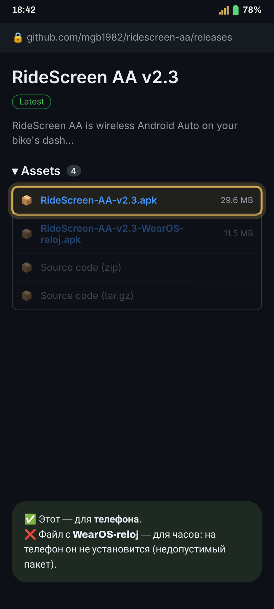
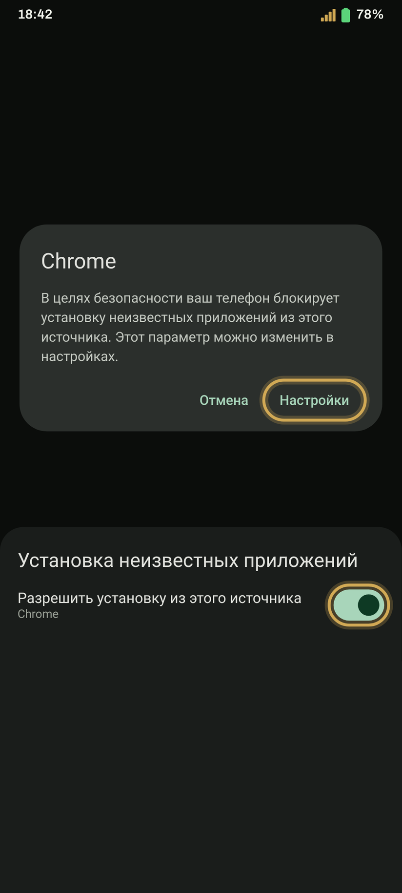
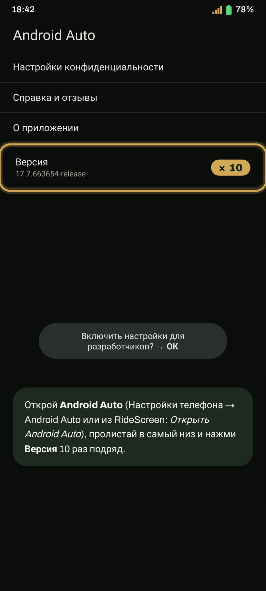
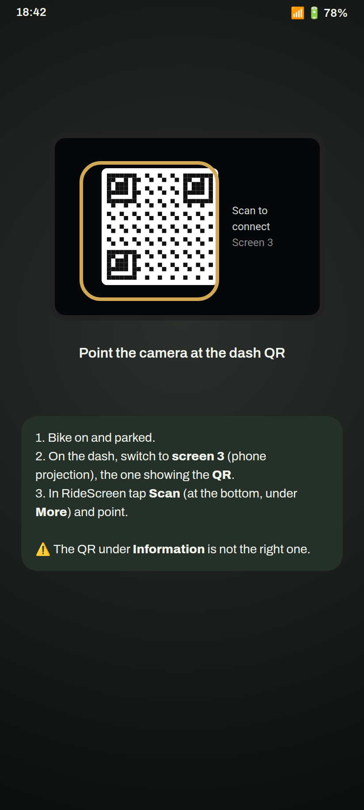
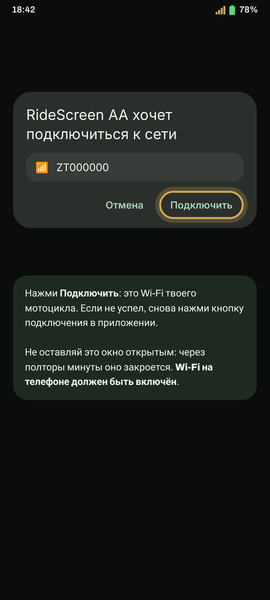
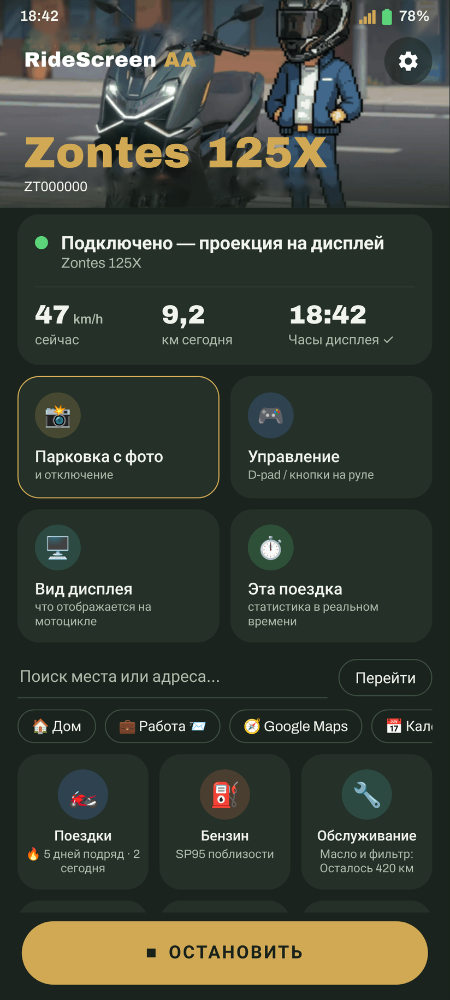

Установка и подключение за 10 минут
Android Auto на дисплее Zontes шаг за шагом. Первое подключение займёт несколько минут, а дальше достаточно одного нажатия или вообще ничего.
Есть часы с Wear OS? Продолжай с раздела руководство для часов ниже.
- Телефон с Android 10 или новее и 64-битной системой (почти любая модель последних пяти лет).
- Android Auto установлено и обновлено через Play Store. Открой приложение один раз и прими условия.
- На телефоне включён Wi-Fi. Подключаться к какой-либо сети не нужно.
- Если установлено официальное приложение мотоцикла (Zontes / EasyConnection / Carbit), закрой его: Настройки → Приложения → нужное приложение → Остановить.
- Для первого сопряжения мотоцикл должен быть включён и припаркован.
Установка приложения
-
Скачай APK для телефона
Нажми кнопку, чтобы скачать последнюю версию напрямую (RideScreen-AA-v2.3.apk или актуальный на данный момент файл).
Скачать APKПредпочитаешь GitHub? На странице последнего релиза, в разделе Assetsнажми APK, имя которого начинается с RideScreen-AA-v.
Не скачивай файл с пометкой WearOS-reloj: он предназначен для часов, и на телефоне появится сообщение «пакет недействителен».
-
Разреши установку из браузера
Открой загруженный файл. Если Android сообщает, что нельзя устанавливать приложения из этого источника, нажми Настройки, включи Разрешить из этого источника и вернись назад.
Затем нажми Установить.

-
Если появится Play Protect, всё равно установи приложение
Предупреждение появляется, потому что приложения ещё нет в Play Store. Нажми Подробнее а затем Всё равно установить.
Если нажать ОК установка отменится. Повтори попытку, снова открыв APK.
-
Открой RideScreen и предоставь разрешения
При первом запуске откроются Настройки. Предоставь все запрошенные разрешения или нажми Все разрешения выданы чтобы проверить всё сразу.
Android требует доступ к местоположению для подключения к Wi-Fi мотоцикла и сохранения поездок. Приложение не отслеживает тебя.

Настройка Android Auto
-
Включи режим разработчика
Открой настройки Android Auto (Настройки телефона → Android Auto или через RideScreen). Прокрути вниз и нажми Версия 10 раз подряд. Подтверди предупреждение.
Это нужно сделать только один раз.

-
Запусти сервер головного устройства
На том же экране нажми ⋮ (вверху справа) → Запустить сервер головного устройства.
Этот шаг чаще всего забывают. Сервер отключается при каждой перезагрузке телефона и после обновления Android Auto. Если однажды соединение не установится, повтори этот шаг.
Подключение к мотоциклу
-
Сканируй QR-код дисплея
На дисплее мотоцикла выбери интерфейс зеркалирования экрана (экран 3 на 125X): экран проекции телефона с QR-кодом. В RideScreen нажми Сканировать (внизу, в разделе Ещё) и наведи на него камеру.
QR-код в разделе Информация не подходит. Сканируй QR-код именно на экране зеркалирования и оставь дисплей в этом режиме, пока устанавливается соединение.
-
Разреши подключение к Wi-Fi мотоцикла
Нажми Подключить в RideScreen. Android спросит, можно ли приложению подключиться к Wi-Fi мотоцикла (имя сети обычно начинается с ZT…). Нажми Подключить.
Не медли: запрос исчезнет через полторы минуты. Если пропустил его, снова нажми «Подключить» в приложении.
-
Готово: Android Auto на дисплее
Через несколько секунд Android Auto появится на дисплее мотоцикла. Телефон можно убрать в карман.
В следующий раз просто нажми Подключить. Чтобы подключение запускалось автоматически вместе с мотоциклом: ⚙️ Настройки → Подключаться при появлении Bluetooth-устройства → выбери Bluetooth дисплея (название начинается с «ZT») и разреши Показывать поверх других приложений.
Совет: После подключения можно переключить дисплей в другой режим чтобы увидеть обычную приборную панель. Приложение останется подключённым и продолжит записывать поездку. Вернись в режим зеркалирования, и Android Auto появится сразу.
При первом подключении приложение запросит доступ к микрофону: выбери Только во время использования приложения чтобы пользоваться командой «Окей, Google» и кнопкой голосового управления на гарнитуре.

Сообщения приложения и способы решения
«Приложение не установлено» / «пакет недействителен»При установке APK
- Убедись, что скачал RideScreen-AA-v….apk а не версию для часов (WearOS-reloj).
- Если загрузка прервалась, файл повреждён: удали его и скачай заново при хорошем соединении.
- Если написано «несовместимо», у телефона 32-битная система или Android 9 и старше. Сообщи модель телефона.
- Если раньше была установлена официальная версия OpenCfMoto от Alexandru, сначала удали её: у двух приложений разные цифровые подписи.
«Подтвердите Wi-Fi телефона / выбор устройства…»При подключении
- Запрос Wi-Fi мотоцикла появился, но ты не успел его подтвердить. Снова нажми «Подключить» и сразу подтверди.
- Если запрос не появляется, мотоцикл должен быть включён и находиться рядом, а дисплей должен быть в режиме зеркалирования.
- Если запрос появляется, но соединение не устанавливается, проверь, что сканировал QR-код в режиме зеркалирования, а не в разделе «Информация». При сомнениях отсканируй его снова.
«Разреши доступ к устройствам поблизости / Bluetooth и нажми «Подключить» ещё раз»При подключении
- Разрешение Устройства поблизости не предоставлено. Android требует его для подключения к Wi-Fi и Bluetooth мотоцикла.
- Настройки телефона → Приложения → RideScreen AA → Разрешения → Устройства поблизости → Разрешить. Затем нажми «Подключить».
«Wi-Fi телефона выключен»При подключении
Включи Wi-Fi на телефоне. Подключаться к сети вручную не нужно: приложение само подключится к мотоциклу.
«Закрой официальное приложение и подключись снова»При подключении
Официальное приложение мотоцикла (Zontes / EasyConnection / Carbit) удерживает соединение с дисплеем. Настройки → Приложения → нужное приложение → Остановить, затем снова нажми «Подключить». Если не пользуешься этим приложением, проще всего удалить его.
«Android Auto не подключился» / подключается и сразу отключаетсяWi-Fi мотоцикла подключён, но Android Auto не появляется
- Почти всегда виноват сервер головного устройства (шаг 6): приложение показывает уведомление с кнопкой Открыть Android Auto В Android Auto выбери ⋮ → Остановить сервер головного устройства, затем снова запусти его (он иногда зависает, даже если выглядит включённым).
- После перезагрузки телефона сервер всегда нужно запускать снова.
- Не удаляй обновления Android Auto: это не нужно и может ухудшить ситуацию.
Подключается в первый раз, но не после перезапуска мотоциклаПосле выключения и повторного включения
- При запуске переключи дисплей в режим зеркалирования экрана и подожди примерно 20–30 секунд: приложение само найдёт мотоцикл.
- Если изображения всё ещё нет, нажми Остановить а затем Подключить «Подключить» в RideScreen.
- Если за это время ты перезагрузил телефон, сначала запусти сервер головного устройства (шаг 6).
Хочу видеть обычную приборную панель без отключенияДругие режимы
- Всегда подключайся в режиме зеркалирования экрана (экран 3 на 125X): только в нём дисплей включает Wi-Fi. При подключении из другого режима приложение не найдёт сеть мотоцикла.
- Когда Android Auto появится, можешь переключиться в другой режим любой момент: приложение останется подключённым, продолжит записывать поездку, а Android Auto будет работать в фоне.
- Вернись в режим зеркалирования, и Android Auto появится сразу, без повторного подключения.
Ничего из перечисленногоКак получить помощь
В RideScreen нажми ❓ Помощь → Поделиться журналами сразу после сбоя и отправь журналы в группу, указав модели мотоцикла и телефона. В журналах нет паролей и серийных номеров.
RideScreen AA — бесплатное ПО с открытым исходным кодом на основе OpenCfMoto от Alexandru (zanderp). Это не официальное приложение Zontes. Скриншоты приведены для примера; названия настроек могут отличаться на телефоне.